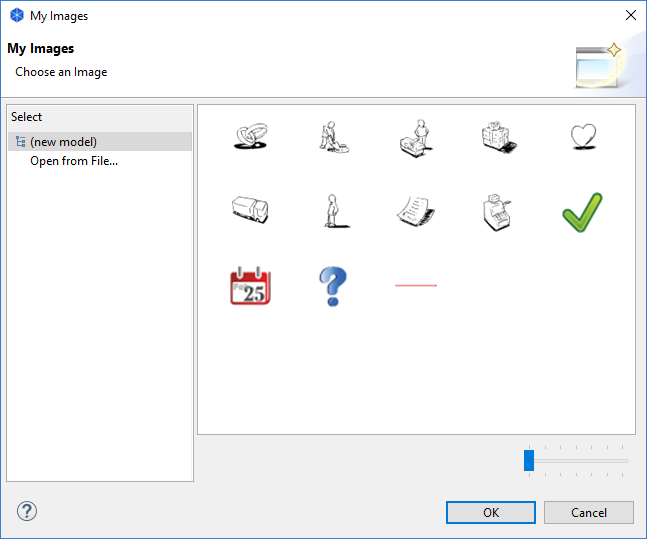

Vous pouvez glisser-déposer les fichiers d'image depuis votre bureau vers le canevas.
Vous pouvez glisser-déposer les fichiers d'image depuis votre bureau vers le canevas.Les blocs de canevas, les emplacements d'image et les magnets peuvent contenir des images. Les images dans les blocs et les magnets sont des icones et son redimensionnées jusqu'à une largeur et une hauteur maximum de 100 pixels. Les images peuvent être de n'importe quelle taille mais nous vous suggérons de les laisser raisonnablement petites afin qu'elles ne consomment pas trop de ressources.
Pour ajouter une image à l'un de ces éléments, ouvrez la fenêtre des propriétés et sélectionné l'élément. Double-cliquer sur l'élément dans le canevas ouvrira également la fenêtre des propriétés. Trouvez l'onglet Image dans la fenêtre des propriétés puis activez le sélecteur d'image via l'option "Choisir une image...":

Activation du sélecteur d'image de la fenêtre des propriétés
Ceci va ouvrir la fenêtre de dialogue du sélecteur d'image "Mes images":
La fenêtre de dialogue du sélecteur d'image
Toutes les images qui sont contenues dans tout modèle qui est chargé sont affichées dans le sélecteur de telle sorte que vous pouvez les réutiliser. Si vous souhaitez ouvrir un fichier d'une image présente sur votre ordinateur, choisissez l'option "Ouvrir à partir d'un fichier...".
Vous pouvez glisser-déposer les fichiers d'image depuis votre bureau vers le canevas.Suppression d'une image d'un élément
Pour supprimer une image d'un élément, choisissez l'option "Supprimer l'image" dans le sélecteur d'image.